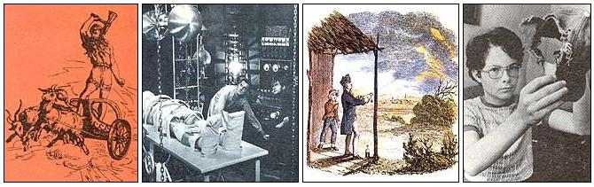

Shock Therapy
Protecting your home and family from lightning, including risk, lightning rods, down conductors, electronics, trees, personal precautions and safety.
By the Mother Earth News editors
July/August 1989
Protecting your home and loved ones from lightning
LIGHTNING, LIKE OTHER FORMS OF violent weather, can be humbling. By comparison, human efforts at destruction seem paltry. Just one thunderstorm, for example, may release the energy equivalent of 100 nuclear bombs. And at any given time, there are around 1,800 of these storms at work around the world.
With all the discretion of a maniac with a machine gun, the clouds over our planet let loose at the ground some 100 times per second. On the authority of up to a billion volts and 200,000 amperes-generating temperatures four times higher than those on the surface of the sun-a single lightning bolt can leap across 90 miles of air. All this it does as a routine part of its job, which is to stabilize the 300,000-volt potential that exists between the ground and the electrosphere.
Lightning is feared as much for its unpredictability as for its power. About 500 North Americans will be struck by lightning this year. But, for mostly inexplicable reasons, two-thirds will survive the experience. Two thousand buildings will burn, and $30 million worth of timber will be destroyed. But many houses and trees will be struck and show no damage. Perhaps the best illustration of lightning's capricious nature is the true story of the man who survived being hit by lightning only to die when the ambulance rushing him to the hospital was zapped, causing the driver to lose control and careen off the road.
The Risk of Being Struck
There are no surefire measures that will entirely protect you or your property from lightning. But there are ways to reduce personal risk and to provide a modicum of protection for buildings.
Probably the most effective, if not the most practical, move would be simply to head north-or south. The majority of lightning strikes take place between 30N and 30S latitudes. Hot spots to flee in the United States include Florida (about 100 lightning-days per year in the center of the state), the Rocky Mountain Front Range of New Mexico and Colorado (about 60 days per year, with as many as 20 concentrated in midsummer), and the lower parts of Texas, Louisiana, Mississippi, Georgia and South Carolina (60 or more days per year). If you're not quite ready to pull up stakes to avoid lightning, though, take solace in the plight of the people of Java, who worry through an average of 223 thunderstorm-days each year.
After geography comes topography. Risk is greatest where you or your home are most exposed, offering a lightning flash the easiest (shortest) possible path to ground itself. Mountaintops are the worst locations, with hillsides, flat land and valleys offering progressively more protection. However, along with the exposure presented by the lay of the land, you also need to consider the height of your home compared to nearby objects. For example, close trees that extend well above the peak of your roof are more likely to take a strike than the building. (This, of course, won't be much comfort if the fried tree falls on the house.)
Protecting Buildings
Structures that are 50' high or less can be protected using a set of comparatively simple guidelines. Lightning rods are set at high points to intercept discharges, and wires conduct the electricity to the ground. As long as the rod, down conductor and ground are sufficiently alluring to the lightning bolt, the charge will be safely diverted to the earth.
That's the theory. In actual practice, even if the main charge is diverted to the ground, the tremendous voltage of the lightning strike and the incredible rate at which the voltage rises induce currents in anything around that's conductive. Though a lightning protection system will probably prevent fire in your home, there still may be serious damage to electronic equipment and some hazard to persons using telephones (who account for about 1% of lightning-related deaths each year).
Lightning rods:Each lightning rod ( air terminal in lightning lingo) protects a volume of matter shaped like a cone with its point at the tip of the rod. This is usually called the cone of protection. For houses 25' tall or less, the imaginary surface of the cone has a slope of 1:2. That is, it goes outward 2' for each 1 ' downward. Thus a lightning rod 25' above the ground protects a ground area described by a circle with a 50' radius as well as everything inside the cone. Any projection above the imaginary surface of the cone must have its own lightning rod. For buildings between 25' and 50' tall, the slope of the cone changes to 1:1, so the radius of the circle where the cone intersects the ground is 30' for a 30'-tall house.
It isn't necessary to cover the entire ridge of the roof under these imaginary cones-creating the residential equivalent of a porcupine. Rods may be spaced every 20' if they're between 10" and 24" tall, or every 25' if they're taller than 24". (However, other parts of the roof-including dormers and intersecting ridges-must fall within the cones.) Most rods are 24" tall so they can be spaced at 25' intervals but don't have to have the supports required for rods taller than 24". They should be located within 2' of the ridge or edge of the roof.
Neither television antennae nor wind vanes make good lightning rods. To offer adequate protection, rods must be at least 3/8"-solid or 5/8"-tubular copper, or 1/2"-solid or 5/8"-tubular aluminum. Likewise, no metal roof has low enough resistance to serve as an adequate rod or conductor-for which an object must consist of at least 3/16"-thick metal. What's more, it's suggested that any ornament on a lightning rod should have less than 20 square inches of surface area to prevent the rod from being blown down in the wind.
Down conductors: Each lightning rod needs to be connected to two conductors leading to separate grounds. A one-way path running to a separate ground is limited to 40' in length on a roof lower than the main roof; dead ends that lead back to the main conductor system may be no longer than 16' . These conductors have to be at least 16-gauge copper or 14-gauge aluminum, may not turn more than 90° in one bend and may not make any turn with a radius of less than 8". Conductors should be kept as far as possible from other metal objects to avoid flashovers. If this proves difficult, the metal objects should be connected to the household ground. Down conductors should be protected from physical damage to 6' above ground level.
Ground: Grounding rods are usually 1/2"-diameter, 8'-long solid copper, copper-clad steel or stainless steel. In some instances, such as where soils are very shallow, they may take the form of thick plates about 2' square, or even 16-gauge cables that encircle the entire building. In any case, the connection between the ground and the down conductor should be clamped or welded.
Different soils require different grounding techniques to achieve sufficiently low resistance. Deep, moist clay soils can get by with a single rod penetrating 10' below the surface in compacted soil. In sand or gravel, however, two of these 10'-deep rods, spaced at least 10' apart, are needed. In shallow clay soils, a conductor in a 2'-deep, 10'-long trench will do, while shallow sand or gravel can be accommodated with a 2'-deep, 24'-long trench and conductor.
The lightning-protection ground must be connected to all the other electrical grounds in the building, including those for the electrical service; the telephone; any antennae; gas lines; underground pipes such as water, sewer and well casings within 25 '; and other metal conduits.
The human body can serve as a very effective lightning rod.
Protecting Electronics
Because their logic circuits operate at low voltage, electronics such as televisions, stereos and computers are especially susceptible to damage from lightning. Either the direct effects of lightning's high voltage or the induced surge indirectly produced by a nearby strike can easily ruin such equipment.
If lightning strikes your house or a utility pole on your side of the utility's electrical transformer (it's that metal can hanging on the power pole), only drastic measures will suffice. An uninterruptible power supply will generally save equipment in such a situation, though the supply itself may be sacrificed (at a cost of from $800 to several thousand dollars). The only alternative is to unplug when lightning threatens.
Lightning that strikes some distance from your home is still very threatening to electronics, but in such cases there is inexpensive protection available. Because both the phone and electrical companies equip their lines with lightning suppression equipment, a direct hit on a pole will largely be grounded. Only the induced voltage-generally on the order of thousands, rather than millions, of volts-is a problem. Readily available devices called surge suppressors can handle induced surges.
A surge suppressor consists of a complement of electronics usually built into a special electrical outlet. Inside, solid-state electronics such as avalanche diodes and metaloxide varistors (MOVs) lie in wait for an abnormally high voltage. The diodes and MOVs are wired across t he three legs of a standard household circuit: hot, neutral and ground. When the voltage exceeds the rating of the diodes or the MOVs (typically around 300 volts), they become conductive and allow excess voltage to shunt across the circuit before it can enter the appliance.
When you're protecting electronics in your home from lightning, don't forget equipment connected to phone lines. Lightning is just as happy to make its entrance that way as through power lines, and answering machines and computer modems are fragile pieces of equipment. Worse, the damage may not stop there. Lightning-induced voltage surges can get into a computer through the phone line and modem and proceed to destroy the main circuit board and the disk drives and then even find their way out to the monitor or printer. It's not unusual to lose everything because of one forgotten phone line. Either unplug phone lines when they're not being used, or buy surge suppressors for them.
The success of a surge protector depends on several things. First, it must be wired to serve all three legs of the circuit. The least expensive surge protectors typically have one MOV wired between hot and neutral, making them little better than useless. Second, the surge protector must be able to respond to lightning's incredibly rapid voltage rise.
Avalanche diodes are very quick but can't handle much power; MOVs are slow but stout. That's why they're often used in combination. Still, situations occasionally arise where even this team can't meet the challenge; surge suppression doesn't offer complete protection. Third, the components must be undamaged. Because the diodes and MOVs do nothing when nothing is wrong, you can't tell if they've been ruined by a prior lightning strike. Surge protectors with a circuit to indicate the integrity of the devices are best. (If you don't mind a little simple soldering, you can build an adequate surge suppressor yourself. TJ Byers described the assembly of a simple MOV-based unit in MOTHER No. 89, page 118.)
The Victorian lightning-rod umbrella, and the modern Lightning Hopkins (left).
Protecting Trees
Any tree whose trunk is within 10' of the house and whose branches extend above the roofline should have its own lightning-protection system to prevent side-flash to the house. You may also want to protect trees that could fall on the house or that have particular value.
Use the same material specifications for trees as you would for the house. Place air terminals as high as possible in each main branch, and interconnect the down conductors at branch intersections. If the trunk diameter is greater than 3', use two down conductors. Leave slack in the down conductors to allow for growth. Typical grounding solutions are to use three 10' radial conductors in trenches or a single radial conductor extending at least 25' or to the branch line, whichever is greater.
Personal Protection
Up to this point, lightning protection has been mainly a matter of economics. Houses, computers and trees can all be replaced, given enough time and money, so it might seem logical to forgo a $1,500 investment in lightning protection in cases where the risk is relatively low. But when it comes to loved ones, cost-benefit analysis just doesn't apply. Fortunately, protecting oneself from being struck by lightning is mostly a matter of understanding the nature of the hazard and practicing good sense.
If at all possible, stay inside a substantial building during a thunderstorm. Put as many walls as possible between you and the outdoors, stay away from windows and doors, and don't use the telephone.
If you're stuck outdoors, though, there are still good and bad places to be. The one bit of advice most people know is to stay out from under lone trees, but there's plenty more to it. For instance, a spot within a grove of trees all about the same height and growing in a depression may be very safe. Rather than rely on maxims, it's better to try to understand mechanisms. Think of lightning as a great big spark looking for an easy path to the ground. Your goal is to avoid becoming part of that path and to keep your distance from things that might. Let's study some examples.
Avoid any location where you project above the landscape. The principles are the same as for siting a house: Valleys are best; mountaintops are worst. Similarly, being in a boat without a mast is a very risky proposition in a thunderstorm. By the same token, a person sitting on a tractor in an open field can become a very effective lightning rod. On the other hand, an automobile with a solid metal roof is actually a fairly safe place to be, since the charge of a direct strike will most likely be carried through the car's skin and will arc to the ground. But avoid seeking shelter inside a shed with a metal roof supported by wooden poles. In this case, your body might look like the least resistive path from the roof to the ground. Metal objects, in general-including fences, pipes and clotheslines-are likely to be struck, so steer clear.
Golfers and ballplayers are among those at highest risk-largely because they're often caught in the open. If caught in a storm, golfers should stay several yards from carts and other golfers, remove metal-cleated shoes and avoid holding metal clubs or umbrellas. (Yes, you might get wet, but think about what a person holding an umbrella above his or her head looks like to a lightning bolt.) Ballplayers should consider returning immediately to the dugout.
Lightning often offers an eerie warning of its imminent arrival. When metal objects start to glow (known to meteorologists as co rona discharge ) or when hair begins to stand on end, the danger is very high. Immediately drop to your knees, bend forward, and place your hands on your knees. Keep the surface area of contact between you and the ground to a minimum, but get as low as possible.
The real tragedy of lightning is that many people who are fatally struck could have survived. Most lightning deaths occur because the intense shock causes the heart to stop. In such cases, cardiopulmonary resuscitation (CPR) can easily get things going again. Some experts estimate that half of lightning fatalities could be prevented by prompt CPR. For those who do survive, burns are usually the only lasting damage. It's amazing that the human body can withstand being the conductor for a multimillion-volt electrical discharge. I suppose we can credit its designer.
|
 Lightning strikes in Norse myth (far left), movie myth (left) and in the legends of our country. |
Bolts seek the highest point around, be it a skyscraper or a kid's baseball cap. |
Left: Cones of protection provided by lightning rods. Below left: Schematic for the connections of conductors to grounds. Below: ""Thunder days"" per year, by region. |
|
In the comics lightning is symbolic of speed, but a high-voltage hotfoot will likely stop you in your tracks. |
The Victorian lightning-rod umbrella, and the modern Lightning hopkins(left). |
Altitude draws strikes, in life as in the tarot deck |
|
Altitude draws strikes, in life as in the tarot deck |
 |
|